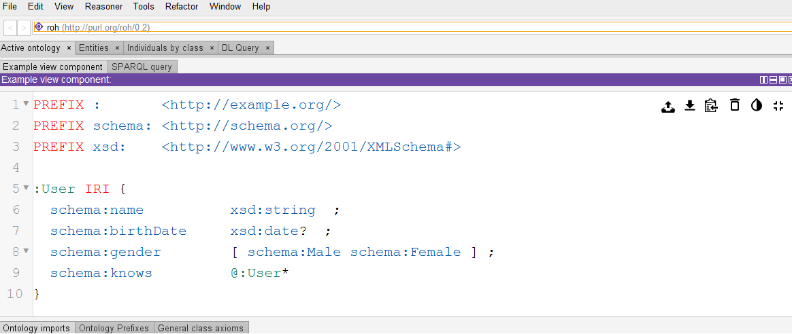

Welcome to ProtegeShEx
ProtegeShEx pretends to act as a Shape Expressions Plugin for the Protégé tool. This plugin adds ShEx features to Protégé in order to allow the users to validate their ontologies using ShEx. The first version of the plugin incorporates YASHE as a ShEx text editor:
This plugin is still work in progress but in the future it will incorporate at least:
- ShEx Text Editor
- RDF Text Editor
- ShapeMap Text Editor
- ShEx Validator
- Validaton results View